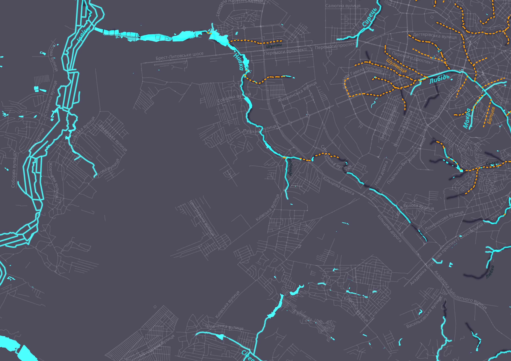
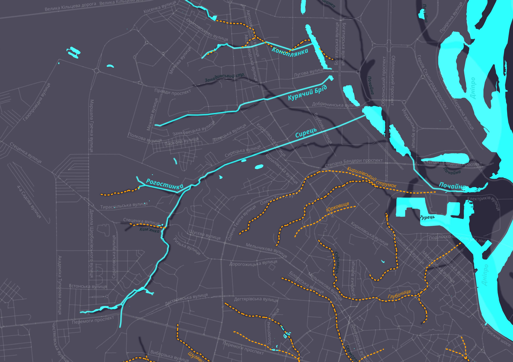
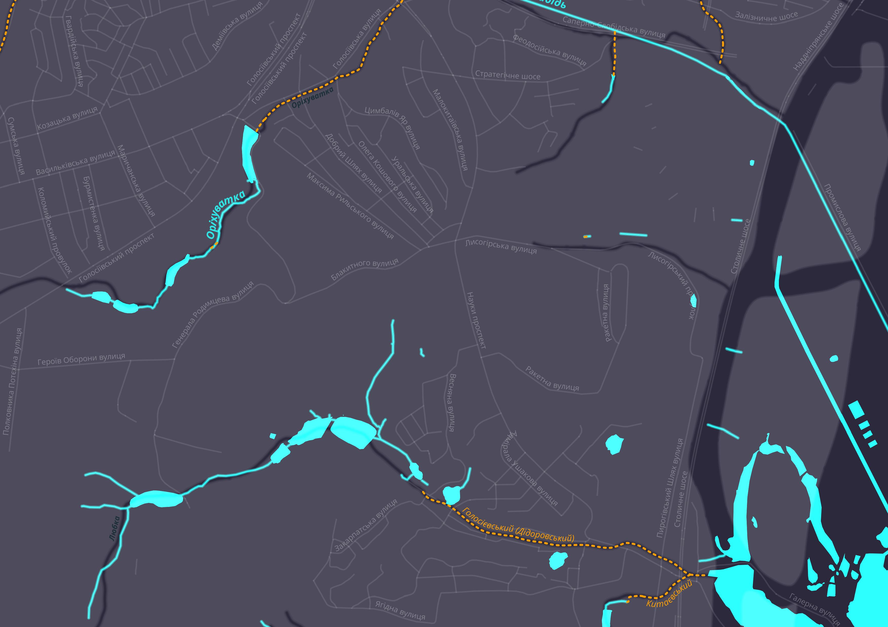
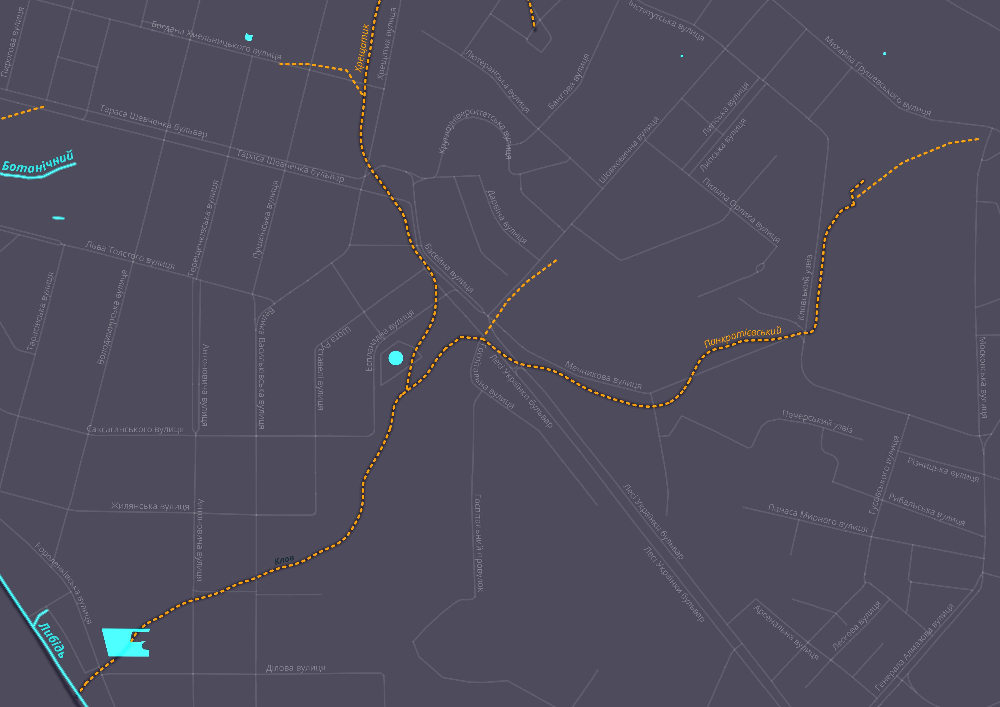
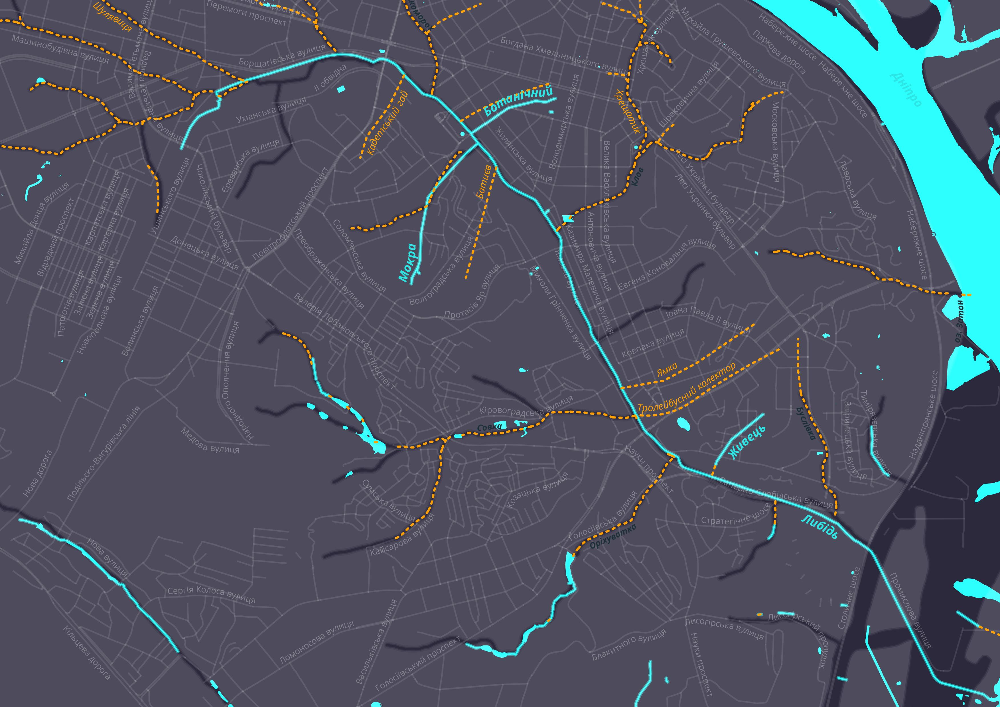

Скільки малих річок у Києві, не знає ніхто. А їх багато: лише захованих під землю струмків і потічків — понад 100 кілометрів. Без них київські пагорби давно б з'їхали у Дніпро. Частина з них тече промзонами, частина захована під дорогами. Якщо невидиме зробити видимим, Київ стане казково красивим. Уявіть всі ці стрімкі струмки і річечки в сучасному ландшафтному дизайні з квітами, лавками, прогулянковими доріжками і кав'ярнями на їх берегах. Але мешканці поверхні денної не здогадуються про підземний світ, який дає життя місту.
Як ми склали карту малих київських річок, які таїни приховують підземні води, яким чином річки-смердючки не дають місту впасти та чому географи й археологи тривалий час не звертали на них уваги. Репортаж-дослідження.
Поки я одягаю військові бахіли, мій провідник по підземному Києву Кирило Степанець обводить поглядом пагорб над мостом метро: «Якби ви могли бачити крізь землю, перед вами відкрився б лабіринт підземних ходів». У цих лабіринтах течуть річки та струмки.
Якщо в істориків, географів та екологів спитати, скільки в Києві річок, то найточніша відповідь звучатиме так: багато. Дігер-краєзнавець Степанець нарахував близько ста природних водотоків. Історичні назви зберігають лише кілька десятків струмків. І відомі вони — як назви, так і струмки — вузькому колу спеціалістів. Звичайні ж мешканці міста часто користуються узагальнювальним топонімом: річки-смердючки.
Колись із них пили воду шерстисті носороги, мамонти, північні олені та, звичайно ж, люди. Які прийшли сюди щонайменше 20 тисяч років тому і залишились назавжди. Спочатку люди ставились до річок із благоговінням.
Первісні жреці, а пізніше протослов’янські та слов’янські волхви обожнювали воду. Кожна велика водойма мала своїх богів-покровителів. А великими ще за часів Київської Русі були ті водотоки, які сьогодні навіть не позначені на карті (Юрківський струмок, Глибочиця, Скоморох, Клов, Хрещатик, Наводничі тощо).
Про їх божественну природу свідчить історія деяких назв. Скажімо, річка Нивка, що набирає силу в передмісті Києва, Жулянах (стара назва — Жиляни, Желяни), у давнину мала інші імена — Борщагівка, Борщівка (звідси «Софіївська Борщагівка» та «Петропавлівська Борщагівка»), а ще до того — Желань.
Про розміри «малих» річок у князівські часи можна лише здогадуватися. Вони створювали природну фортифікаційну систему — їх води зупиняли цілі армії. У 1036 році князь Ярослав Мудрий розбив печенігів, які почали тікати в різні боки, і багато з них потонули в Либеді і Сетомлі (за «Повістю минулих літ»).
Після цієї події печеніги зникають з історичної арени й у письмових джерелах не фігурують. На знак перемоги Ярослав Мудрий побудував Софійський собор.
Сетомль кілька разів згадується в літописах. Зрозуміло, що це одна з сучасних київських річок, але яка саме — наука не знає. Найпоширеніші версії: Сирець, Скоморох, Юрковиця (Юрківський струмок), Виноградарський колектор.
Під час розмови з кандидатом історичних наук Віталієм Козюбою складається враження, що наше минуле — суцільна біла пляма. В Інституті археології НАН України ми гортаємо схеми-реконструкції древнього Києва та його околиць. Коли я обводжу олівцем величезну споруду, що височіла над ярами неподалік від злиття річок Клов і Хрещатик, археолог коментує:
— Кловський монастир, знищений татаро-монголами у 1240 році. Його реальна площа була ще більшою, ніж на цій карті. Отут і тут — будівлі, тут — кладовище.
— Кладовище там, де зараз Олександрівська лікарня?
— Майже. Здається, недавно це ще була територія лікарні, а зараз там будівництво.
Коли мова заходить про межі та населення Києва кінця XIII — початку XIV століття, вчений з ноткою жалю каже:
— За радянських часів археологи майже не займалися післямонгольським періодом. 1240-й рік і все: археологія закінчується. Деякі знахідки просто викидали. У прямому сенсі слова викидали. Кераміку, скло! — все емоційніше говорить історик. — Серед археологів було навіть таке жаргонне слівце — «познятіна».
Щоб дізнатися, чому Віталій Костянтинович шумить, час від часу до кабінету заглядають його колеги. Спочатку просто заглядають, потім приєднуються до розмови.
— Дозволялася лише історія класової боротьби, — підхоплює тему археолог Андрій Чекановський.
— Офіційна версія була така: після монголо-татарської навали все було в запустінні, кияни або загинули, або розбіглися. Зникла історія ремесел, історія землеволодінь, юридична історія…
— Возз’єднання України з Росією та класова боротьба — ось майже і все, що дозволялося, — резюмує Козюба, — тому що це пов’язано з концепцією «колиски трьох народів». Не дай боже було знайти щось, що покаже: в Україні відбувалося одне, в Білорусі — друге, в Росії — третє. Роблячи вигляд, що після монголів життя якийсь час не було, радянська ідеологія вбивала двох зайців. По-перше, перерізала пуповину наступництва Київської Русі та України — вважалося, що пізніше Київ був повторно заселений з півночі та заходу. А по-друге, як я вже казав, закріплювала концепцію колиски.
— А життя після монголів не зникло? — перепитую я.
Зі сторони дверей переможно лунає третій голос:
— Ні!
— А, Діма, заходь, — кличе Козюба, — знайомтесь: Дмитро Якович Вортман.
— То це ви разом карту зробили? — киваю я на розкладені папери.
— Так, — відповідає історик-картограф Вортман і продовжує перервану тему. — Простий приклад — могили киян, що загинули після татаро-монгольської навали.
— Де? — питаю я.
— А тут, — каже Вортман. — У кількох десятках метрів від нас, на Десятинній. Їх же хтось ховав!
У кімнаті здіймається галас: троє науковців одночасно доводять мені, що у другій половині XIII століття місто існувало. Деякі аргументи стосуються річок.
З цієї трьохголосиці я вихоплюю основні тези, складаючи з них свою мозаїку. Поступово до мене доходить, що береги київських річок та струмків — циклопічних розмірів археологічний фонд. Люди завжди біля води будували церкви, ставили млини, гатили греблі. Детальна карта київських водойм — як тих що збереглися, так і пересохлих, — могла б визначити стратегію археологічних досліджень. Але такої карти нема.
Десятиліттями офіційна наука майже не звертала уваги на міські потічки. Забувалися назви, забудовувалися річища, заганялися під землю київські води. Але вони продовжували вести своє примарне життя, проникаючи на денну поверхню то парковими озерцями, то стрічками струмків, то клекотінням у бетонних лотках.
У дев’яностих та нульових вони стали предметом досліджень дігерів. Кирило Степанець видав кілька книжок про підземні водотоки. А у 2007 році побачила світ наукова праця на цю тему — «Малі річки Києва» за авторством доктора географічних наук Віктора Вишневського.
Він встановив топографічні координати витоків основних київських річок та склав карту Києва, на якій позначено 31 водотік. Її не дуже розкуповують.
— Знайти малу річку не складно, — каже вчений. — Ось ми сидимо на схилі. Значить, під ним, — Віктор Іванович киває в бік проспекту, — щось тече.
— Що саме?
— Струмок Піщаний. А ви збираєтесь писати про річки? Не розумію, кому це цікаво?
— Нам, — кажу, — нам цікаво.
Виходимо на метро «Сирець», шукаємо однойменну річку. Знаходимо дві. У кількох десятках метрів від станції у Сирець впадає Кам’янка, яка утворює невеличкі озерця вздовж вулиці Стеценка. Кам’янка на жодній мапі не значиться.
Рухаємося вперед, бачимо черговий лівий приток. Півтори години його досліджуємо й занотовуємо наступне. Потік огинає Київський дендропарк, розливається болотом (на картах помічене як озеро) біля залізниці, біжить ліворуч від насипу, повертає під рейки у красивий яйцеподібний тунельчик, виривається в ярок і впадає у Сирець. Як називається?
На план-схемах дендропарку значиться як Курячий Брід. Якщо вірити карті, то тоді в Києві має бути дві річки під такою назвою, оскільки ще один Курячий Брід тече Куренівкою. На деяких картах наш потічок зветься Сирець. Але знов-таки абсурд: Сирець впадає у Сирець. І, зрештою, ще одна версія від вітчизняних картографів: Брід.
Телефонуємо до слідопита Степанця.
— Це Рогастинка, — каже Кирило.
— А як же… — починаю я.
— Рогастинка, — наполягає краєзнавець. — Не вірите мені, подивіться на карту-реконструкцію сімнадцятого століття Козюби-Вортмана.
Віримо й пробираємося далі. Знов бачимо лівий приток. Ніде не позначений, але доволі впевнений. Знов телефонуємо.
— Знаю, — говорить Кирило. — Це струмок.
— А-а?..
— Просто струмок.
Нижче цього місця стежка оминає джерельця й розчиняється в кущах. Місцина майже непролазна, хоча й красива. Сирець у цій ділянці тече не в бетонних лотках, а в природному руслі, яке весело зміїться та звинить на перекатах через зламані дерева та автомобільні покришки.
Десь тут мають бути залишки старезної греблі, але знайти їх нереально. Якщо принципово рухатися вздовж русла (а не обходити проблемні ділянки дальніми доріжками), досліджуючи притоки й відшукуючи греблю, то краще озброїтись мачете, щоб прорубати шлях, або ж одягти гумові ботфорти та йти прямо по воді, лякаючи невеличкі зграйки мальків. Оскільки ані першого, ані другого у нас немає, обираємо третій шлях — виринаємо з кущів на вулицю Ольжича та йдемо за пивом.
Умиваємося у річці й навіть сьорбаємо воду
Наступного дня влаштовуємо подібні прогулянки по яругах Голосіївського лісу — річка Оріхуватка та Голосіївський струмок. Продираємося крізь хащі, милуємося краєвидами, добиваємо нові кросівки. Проводимо науковий експеримент на собі — умиваємося в річці й навіть сьорбаємо воду (до речі, вода в Оріхуватці на вигляд прозора й чиста, на деяких ділянках вирує дрібна риба).
Після жертовного експерименту проблем зі здоров’ям не було.
Воно й зрозуміло: відкриті ділянки рік розташовані доволі далеко від старої частини міста. Щоб відчути дух древнього Києва й віднайти якийсь забутий водотік, треба досліджувати русла у старих цегляних колекторах. Телефонуємо дігеру Степанцю.
Штольні він, як і усі дігери, називає системою: «вдаритися головою об систему», «зробити план-схему системи». У кожної системи є власна історія, настрій, притаманні лише їй небезпеки тощо. Та, в яку ми зараз опустимося, побудована у 1916 році, відносно безпечна й дужа красива.
Пірнаємо в каналізаційний люк. У нетрях системи запах льоху, низькі склепінні стелі — доводиться йти, по-старечому зігнувшись. Постійний дзвін струмка під ногами. Стіни срібні — такий ефект від плісняви і крапельок води. Містичну й трохи моторошну атмосферу доповнюють кажани, що вилітають з бокових ходів (ці істоти, до речі, занесені до червоної книги).
— Я взимку тут не ходжу, — каже Кирило.
— Чому?
Зима вважається найнебезпечнішою порою року для таких походів, оскільки ймовірність дощу максимальна. А дощ — це дощ. За лічені хвилини вода заповнює штольню. Може утворитися так звана колекторська хвиля, що змітає все на своєму шляху, навіть бетонні плити. Якщо до виходу далеко — шансів врятуватися нема.
— А вони тут узимку гірляндами висять — сплять, — продовжує Кирило, відганяючи рукою чергового кажана. — Якщо їх збудити, вони до весни не доживають — гинуть.
Невеличку частину маршруту долаємо практично навприсядки. За дві години підземних мандр я розумію, що лабіринт — не алегорія. Без провідника тут робити нічого.
Потічок то набирає силу й піднімається по коліна, то трохи не збиває з ніг, то перетворюється на стояче болото, то майже зникає, але не повністю.
Кирило впевнений, що це — Панкратіївський струмок. Довжина — 2—3 км від каналізаційного люка. Ні на яких картах його, звісна річ, немає. Де витік — невідомо. Та й взагалі, чи збігав колись такий струмочок з Київських круч — нема в кого спитати.
Виявилося — збігав. Кілька днів потому знайомий археолог розповів, що Панкратіївським яром щось таки текло. Було навіть невеличке болото. А працівник Національного заповідника «Софія Київська» Максим Стрихар доповнив картину.
— Там знаходилася печера відлюдника Івана Грішного, датована десь тринадцятим сторіччям, — спокійним голосом, начебто згадуючи ті далекі часи, розповідає історик. — Можна припустити, що печера була розміщена поруч із джерелом…
— Звідки ви знаєте, що Грішного? — перебиваю я.
— Там графіті було, напис на стіні, — пояснює Стрихар.
Максим Стрихар у 90-х роках став ініціатором створення руху ACIS (Асоціація київських дігерів). Геолог за освітою та археолог за фахом Стрихар був на той час науковим співробітником заповідника «Києво-Печерська лавра». Дослідників антропогенних печер, тобто дігерів, готували професійно, на базі Асоціації спелеологів України. У межах цієї асоціації якийсь час навіть існувала Комісія дослідження штучних печер.
Але на фінансування молодих науковців-екстремалів у держави коштів не було і рух дігерів залишився неформальним.
Максим Стрихар закінчив духовну семінарію і нині є священиком Української автокефальної православної церкви. За сумісництвом — реставратор. Його робоче місце — колишня монастирська келія. Косі промені сонця падають на склеєні уламки вази, знайденої в підвалі сусіднього будинку — колишньої резиденції митрополита.
Якийсь час розповідаю йому про Аннабеллу Моріну, що відроджує Почайну, а потім, користуючись нагодою, питаю:
— Отче, з київськими річками пов’язано багато легенд, як язичницьких, так і християнських. Вся ця язичницька річкова міфологія — це не від лукавого?
Отець Максим дивиться на віконні грати, посміхається:
— Вода — символ очищення. Чистота води — те, що поєднало язичницький світ та християнство. А спасіння річок — це добре. Мене, наприклад, турбує Совка.
— Чому саме Совка?
— А у нас там храм.
Отже, маловідомий історичній науці, майже зниклий Панкратіївський струмок ми знайшли, переконалися в тому, що він живий.
Ідея віднайти подібним чином усі історичні водотоки — занадто зухвала. Навіть якщо присвятити цій справі усе життя, результати будуть сумнівні: іноді важко відрізнити дренажні стоки від природних струмків.
Якщо такі відомі річки, як Клов, забуваються й перейменовуються на колектори (у випадку Клова — Прозорівський колектор), то струмки повністю губляться в лабіринтах київських підземель. Їх точні координати можуть бути лише у володаря цього, майже потойбічного світу.
І такий володар є.
У 1761 році в Києві заснували «Особую контору для составления предложений о благонадежнейшем укреплении нетвердого берега Днепра, бесперестанно размываемом снизу стремлением Днепра и сверху текущими с гор ручьями снеговой и дождевой воды». Інженери контори й спроектували величні підземні споруди.
Спочатку штольні робили з дерева (до речі, дубові дренажні конструкції виконували свої функції аж до 1970-х років). Потім — із цегли. Нині галерейно-штольневі системи будують з бетону.
«Особая контора» ніколи не припиняла свого існування: підземелля потребують постійного догляду та ремонту. За радянських часів цей заклад називався Гідротехконтора. Сьогодні — Спеціалізоване управління протизсувних підземних робіт (СУППР). Загальна довжина підземних конструкцій на його балансі перевищує 100 км.
Довжина підземних каналів Києва перевищує 100 км
Найстаріше та найзагадковіше комунальне підприємство Києва ховається за металевими воротами в нетрях гори Юрковиці, приблизно над тим місцем, де у 1896 році археолог Вікентій Хвойка розкопав кістки 60 мамонтів та відкрив стоянку первісної людини епохи палеоліту.
Там, на другому поверсі невеличкої будівлі, кабінет воєводи підземного царства. Праворуч сейф із тризубом, ліворуч стоси паперів. По центру сидить директор підприємства Анатолій Бойко й випромінює спокій.
Не встиг я поставити перше питання, як директор на нього відповів:
— Карти, схеми та іншу інженерну документацію не надам, — і з посмішкою продовжує: — Це інформація з грифом «Секретно».
Ймовірно, я не перший, хто прийшов до нього з таким проханням. Анатолій Григорович запевнив, що веденням реєстру річок та струмків СУППР не займається. Він не називає підземні річки річками і взагалі не схильний до поетичної рефлексії з цього приводу. У нього інженерний підхід до справи.
— Тож виходить, що витоки історичних рік втрачені назавжди? — сумую я.
— Чому назавжди? — на секунду директор замислюється. — Можна провести наукове дослідження і знайти місце включення певного водоносного горизонту на певній ділянці. В ярах та балках перепад позначок рельєфу 70—90 метрів. Десь звідти і б'ють джерела.
Додаю:
— Щось подібне ми вже спробували зробити. На аматорському, звичайно, рівні. Деякі дігери досліджують…
Погляд директора стає колючим. «Лазив у штольню?» — мовчки питає він. «Лазив», — так само мовчки відповідаю я.
— Дігери... З цими козаками в мене протягом останніх чотирьох років є зв’язок. Десь у 2013 році, коли було святкування 1025-річчя хрещення Русі, ми перевіряли дренажні системи на Печерську. Тоді я зібрав їх і сказав: «Хлопці, не гуляйте там, бо буде біда. Ви ж не знаєте цих систем…»
— Знайшли спільну мову?
— Так. Але напишіть: дренажні системи — це постійна небезпека. Може трапитися гідропрорив. Може спрацювати фільтр, і у штольню потрапить 5—7 кубів розрідженого ґрунту. Прохід на якийсь час закупориться, людина може загинути. Такий викид — не щось екстраординарне, а робочий момент. Ще одна небезпека — загазованість. Скажімо, кішка випадково потрапила в систему, здохла, розклалася.
Пробую збити директора з цієї теми, та марно:
— Під час останньої реконструкції Хрещатика, у 98-му році, ми — гне свою лінію директор — робили огляд Хрещатицького колектора.
— Річки Хрещатик?
— Ну так. Уздовж, як ви кажете, річки йдуть комунікаційний колектор, водопровід та теплотраса. Спускаємося під Головпоштамтом, працюємо, поступово рухаємось в бік Бесарабки. Проходимо перехрестя з вулицею Богдана Хмельницького. І бачимо, як вода під ногами по секундах піднімається. Як виявилося, в цей час над Києвом бушувала гроза. Ми швидко на вихід. А води все більше. До виходу залишається десь 150 метрів, а бігти все важче й важче — води спочатку по коліна, потім по пояс… Насилу врятувалися. Ще б пару хвилин — і винесло б у Прозорівський колектор.
— Тобто у Клов… Давайте все ж, про роль річок. Уявімо собі ситуацію, що якоїсь із них не стало.
— Як це?
— А так. Сирець забетонували.
Анатолій Григорович ненадовго замислюється, щось, очевидно, підраховуючи й каже:
— Буде катастрофа. Двадцять чотири години на добу з дренажних систем йде вода… Дренажні системи наповняться, почнеться водонасичення ґрунту. На Куренівці вода потрапить в каналізаційні системи та перемішається з… Ви ж розумієте. А що буде зі стрічковими фундаментами будинків, що будувалися у 60—80 роках і раніше, мені навіть страшно уявити.
Переді мною на столі лежить перелік зі 132 небезпечних ділянок. Зазираючи в ці папірці, продовжую:
— Основна частина водостоків, дренажів та закритих дощових колекторів створена доволі давно. Чи не побільшало зсувонебезпечних ділянок, чи витримують дренажні системи нове навантаження?
— Витримують. Створювалося на віки. Найбільш небезпечний момент був — 22 березня 2013 року, коли за одну добу випало дві місячні норми снігу і він почав швидко танути. Пам’ятаєте? От тоді це був стрес-тест для наших систем. Що могло зламатися — зламалося, де тільки був горбочок «умовно стійким», там він і з’їхав. У Києві, звичайно ж, є зсувні зони, але вони були завжди — тут такі ґрунти. Однак загалом ситуація нормальна.
Випустити річки з колекторів та бетонних берегів? Це фантастика
— Малі річки тримають столицю?
— На сто двадцять відсотків. Річки й озера Києва — це життя міста.
— То, може, зрештою, випустити їх із колекторів та бетонних берегів?
Анатолій Григорович сміється:
— Дмитре, це фантастика. Ці річки розташовані під магістральними трасами. Уздовж них ідуть комунікації. Хоча… — директор перестає сміятися: — Хоча в деяких місцях це можна було б зробити. Але повністю — ні. Навіть там, де вони протікають на поверхні, береги забудовані, там багато підприємств.
Якось сумно, коли господарі річок називають їх колекторами.
Це, між іншим, стосується не тільки СУППРу, а й Київавтодору, на балансі якого також багато ділянок тих самих водоймищ. Знайомі волонтери розповідали, як працівники Київавтодору відмовилися встановити дорожній знак «р. Либідь» перед мостом на вулиці Байковій. Сказали: «Це ж не ріка, це — Либідь».
У людей з виключно практичним складом розуму ідея відродження (ревіталізації) річок викликає непорозуміння. Основні аргументи противників — цього не дадуть зробити підприємці, чиї об’єкти розміщені на узбережжях. Та й взагалі, нема чого рятувати. Обидва твердження — міфи.
Либідь тече по промзоні. Але це не зупиняє громадську організацію фонд «Наша Либідь». Активісти підготували план відродження всієї річки, який передбачає будівництво очисних споруд, реконструкцію та розширення річища, створення на її берегах парків, скверів, зелених коридорів, виставкових залів, музеїв та атракціонів. Що скажуть промисловці та підприємці?
Вони дають на це гроші! Ініціаторами конкурсу цих фантастичних проектів якраз і стали промисловці та підприємці. Співзасновник фонду «Наша Либідь», бізнесмен Сергій Молодов пояснює свою мотивацію коротко: «Я в цьому місці живу і працюю. І багато років, проходячи через Либідь, думав, як же так… А потім вирішив навести лад». Він організував прибирання кількох кілометрів бетонних берегів. Сміття вивозили десятки КАМАЗів.
Бізнесмен Сергій Молодов:: «Багато років, проходячи через Либідь, думав, як же так… А потім вирішив навести лад»
До ініціативи долучилися такі відомі компанії, як Henkel, Saint-Gobain, Ceresit. За їх спонсорської підтримки (та моральної — КМДА) влітку пройшов перший тур архітектурного конкурсу. Другий тур намічено на жовтень. Але вже зараз зрозуміло: проект розрахований на багато років. Загальний кошторис поки невідомий, але мова йде про десятки, якщо не сотні мільйонів доларів.
«Працюємо поетапно, — розповідає про стратегію Фонду його прес-секретар Олеся Козенко. — Сьогодні в нас є дозвіл на реконструкцію двох кілометрів — від вулиці Федорова до Байкової. Перша ціль — зробити цю ділянку, показати, на що ми здатні». Наразі Фонду бракує грошей на відродження усієї ріки, але Олеся Козенко налаштована оптимістично: «Будемо стукати в усі двері, подавати заявки на гранти, залучати спонсорів».
Якщо не згадувати про прибирання берегів, то говорити про конкретні результати діяльності Фонду поки зарано (хоча дуже хочеться побажати цим людям успіху). Але міф про те, що підприємці не дадуть відродити річки, — спростовано.
Другий міф противників відродження річок — нема що рятувати.
По-перше, річки є. З людської вини скалічені, загиджені, примарні, але — є. Своїм існуванням вони нагадують нам про нашу історію. По-друге, вони живі, там навіть риба є, і я звідти пив воду. На відкритих ділянках водотоків мешкає доволі багато живності (бобри, болотні черепахи, вужі, молюски та видри), а на берегах можна натрапити на 900-річні дуби. У водах колекторів теж вирує життя. Це не тільки кажани, там є чимало видів риби, яка водиться не тільки у звичайних річках, а й і в гірських.
Тож на питання «Що рятувати?» є щонайменше дві відповіді: історію та життя. Чи спочатку «життя», а потім «історію».
А ще треба рятувати місто від радянської сірості на пострадянської еклектики. Річки дають шанс зробити унікальний міський дизайн у модному і життєво необхідному нині «зеленому» стилі.
Давайте помріємо. Не думайте про гроші з бюджету, обсяги роботи, куди подіти автомобілі і як організувати об'їзд. Ці практичні питання можна вирішити, але якщо й ні, то вони не заважають мріяти. Уявіть, що Либідь тече не по захаращеній промзоні, а по парку, її дно підсвічується різнокольоровими ліхтарями, а поруч люди прийшли на концерт класичної музики просто неба. По Глибочицькій замість дороги тече річка Глубочиця, навколо клумби, прогулянкові доріжки й кав'ярні. Під'їзди офісів і житлових будинків спускаються прямо в цей парк, а десь поруч зі схилу витікає джерело і водопадом спадає до річки.
У такому місті хочеться жити, робити бізнес і творити шедеври. Економічне процвітання Барселони почалося зі зміни міського дизайну. Бо багатство творять талановиті люди, а вони хочуть жити у приємному місці.
Глобальне потепління перетворює міста на бетонні пустелі, спекотних днів стає все більше і спека стає сильнішою. У київських місцинах, де багато зелені і є водойми, температура влітку на 15 градусів нижча, ніж там, де тільки бетон та асфальт. Річки дали життя Києву, річки його тут берегтимуть, треба лише мудро і з повагою до них ставитися.
Ми вагалися, чи варто в цьому матеріалі говорити про Куренівську трагедію. Нових фактів не відкриємо, а настрій зіпсується. І все ж таки — варто.
Нагадаємо, о восьмій ранку 13 березня 1961 року нинішня вулиця Олени Теліги (самої вулиці тоді ще не було) почала перетворюватися на густий потік, що, рухаючись зі швидкістю 5 метрів за секунду, виносив піщано-глиняну пульпу на вулицю Фрунзе (зараз — Кирилівська). Селевий потік змітав на своєму шляху стовпи електромереж, валив дитячі садочки, корпуси пологового будинку, адміністративні споруди, приватні домівки, перевертав автобуси і практично знищив трамвайне депо.
Глиняна маса взяла в полон кілька будівель психіатричної лікарні. І військові рятувальники, що прибули занадто пізно, спостерігали агонію душевнохворих. Трупи складали шарами на підлозі Кирилівської церкви. Скільки їх було, тих трупів?
Радянська влада робила вигляд, що нічого не сталося: наступного дня міські газети вітали киян з весною, що «невпинно вступає у свої права». Тож коли трагедію визнали й назвали кількість жертв — 145 осіб, містяни не повірили. І не вірять досі. За оцінками історика Олександра Анісімова, загинуло щонайменше півтори тисячі людей.
Офіційна причина — прорив дамб унаслідок дефектів, допущених під час їх будівництва. Якщо простими словами: сумнозвісний Бабин Яр та однойменний струмок, що в ньому тече, засипали відходами цегляного заводу. Навесні ця суміш розтанула й прорвала земляну перешкоду. Кияни кивали один одному: «Бабин яр помстився».
А мститися було за що. За зґвалтовану природу та неповагу до історії: на той час так і не було вшановано пам’ять сотень тисяч киян, закатованих тут під час Другої світової окупаційним командуванням. Злочин нацистів довершила радянська влада, виливаючи на кістки загиблих промисловий бруд.
Можна по-різному ставитися до містичних інтерпретацій причин трагедії. Але очевидно: якби люди проявляли повагу до історії та природи, лихо б не трапилось.
То що ж робити, якщо ані в бюджеті, ані в меценатів банально не вистачає коштів на те, щоб повернути киянам засмічені, заковані в бетон та загнані під землю річки й перетворити міський простір на казку? Відповідь проста: річки треба поважати. Почати варто з малого: хоча б не називати їх річками-смердючками. Тому що… Тому що вони живі.